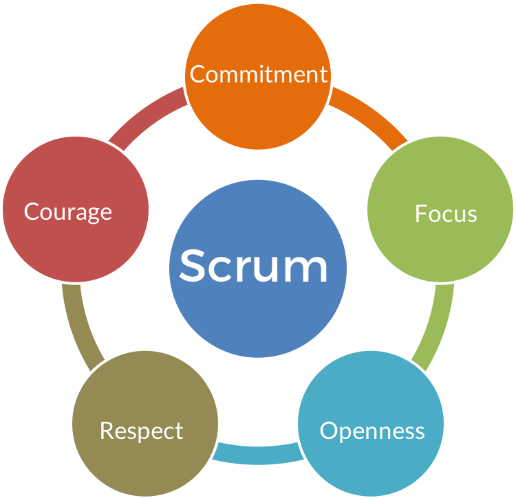
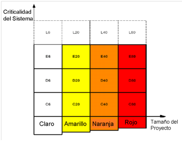

Las metodologías agiles por que surgen a partir de un conjunto de expertos en el desarrollo del software que llevan un proceso muy rígido y con mucha documentación para así poder optimizar el proceso de la creación del mismo. El manifiesto ágil es un documento donde se detalla lo que involucra la filosofía ágil
Este proceso engloba los procesos diferentes que tiene un proceso de desarrollo de software tradicional en uno ágil El manifestó ágil se valora a partir de:
La colaboración con el cliente más que con el contrato Responder a los cambios de último momento Desarrollar el software y que funcionalidad más que la documentación Las interacciones del individuo con el equipo de desarrollo sobre el proceso y las herramientas
Scrum se basa en la teoría de control de procesos em-pírica o empirismo que significa tener la experiencia y la toma de decisiones basándose en lo que conoces, Esta metodología emplea para optimizar la predictibilidad y el control del riesgo, realiza entregas del proyecto en sí. La metodología Scrum describe cuatro eventos importantes que componen cada una de las entregas:
Reunion de planificación del sprint (Sprint Plan-ning Meeting) Scrum Diario (Daily Scrum) Revision del Sprint (Sprint Review) Retrospectiva del Sprint (Spring Retrospective)

Se basa en una serie de reglas que se han utilizado desde el principio a lo largo del desarrollo del software La programación extrema se engloba en 12 principios básicos, pero los cuales se agrupan en 4 grandes categorías
Retroalimentación a Escala Fina: En esta fase se encuentran diversos tipos como las pruebas, la planificación, el cliente y la programación en parejas Proceso Continuo: Permite la integración continua a lo largo del proyecto y codificarlo si es necesario Entendimiento Compartido: se define el criterio de cómo crear un diseño fácil Bienestar del programador: se basa en que si un programador esta exhausto puede crear código de mala calidad y por eso recomiendan a los desarrolladores solo trabajar solo 40 horas a la semana y menos horas extras en el trabajo.
Es una metodología en que establecen un código de colores, mientras más oscuro sea el color el método es pesado, esto define la complejidad que tienen y exige más rigor. Crystal es rígida por los principios que hacen su utilización eficiente
Entre más pequeño tiende a ser el proyecto, se tiene una mayor coordinación A cada proyecto se le asigna un grado diferente de comprensión Cada proyecto necesita diferentes medios de comunicación Debe haber comunicación y retroalimentación de modo que así podemos evitar entregas fallidas del producto Se debe de contar con personas capaces y dedicadas a su trabajo que cumplan con lo que el cliente desea y que se entregue a tiempo
